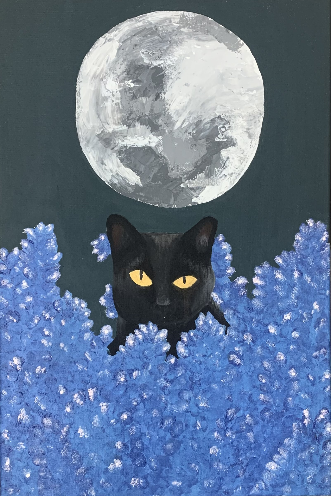
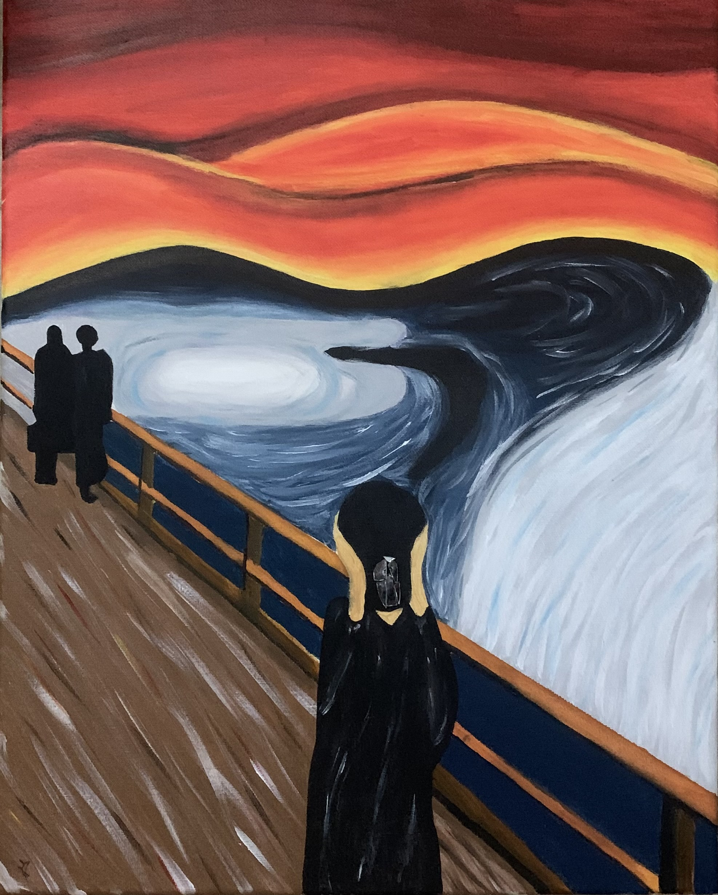
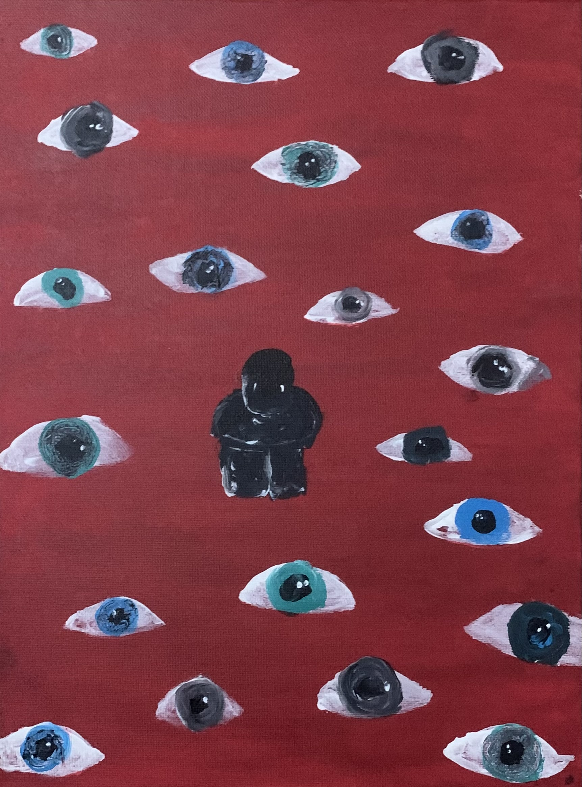

Para além dos projetos académicos, considero a criatividade uma parte importante do meu percurso pessoal e profissional. Nesta secção encontram-se alguns trabalhos artísticos e criativos que refletem a minha identidade visual e expressão pessoal.
A arte é uma forma de explorar novas ideias, desenvolver criatividade e expressar emoções. A pintura permite-me experimentar diferentes estilos visuais, desenvolver imaginação e estimular uma abordagem criativa aplicável também ao design e conteúdos interativos.

Trabalho desenvolvido com foco na criatividade visual e expressão artística através da pintura.

Projeto artístico focado na experimentação visual e identidade criativa.

Trabalho artístico desenvolvido através da experimentação de diferentes estilos visuais.